Lat Pulldown
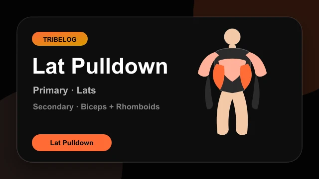
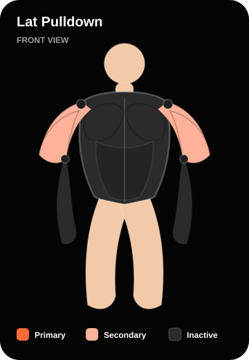
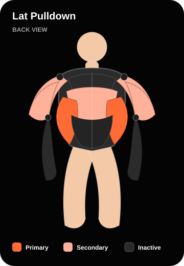
workouts/exercises/v1/lat_pulldown/demo.lottie.jsonPull-Up
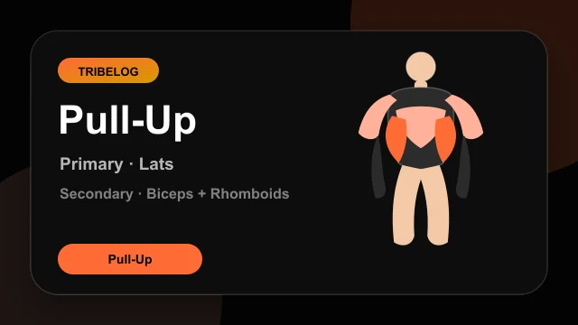
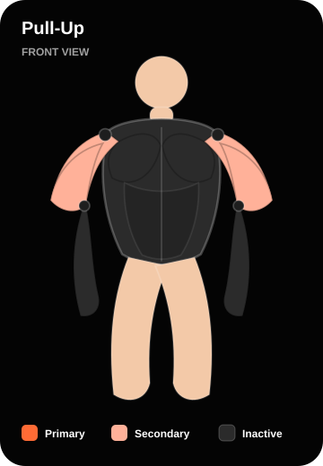
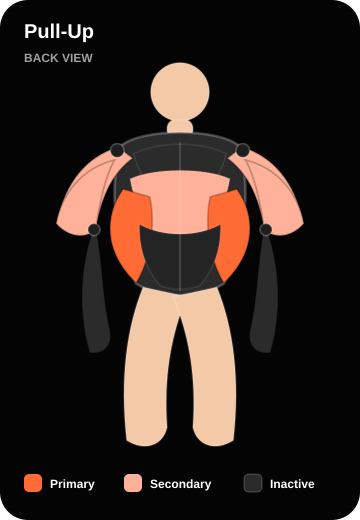
workouts/exercises/v1/pull_up/demo.lottie.jsonAssisted Pull-Up
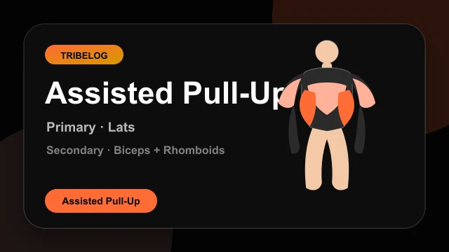
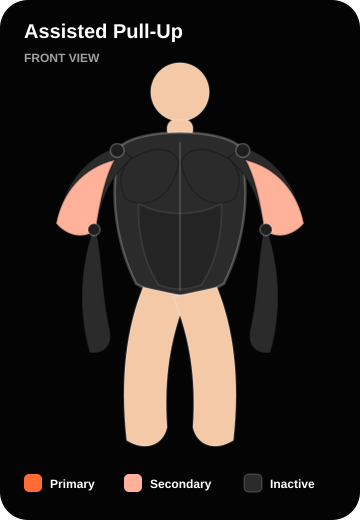
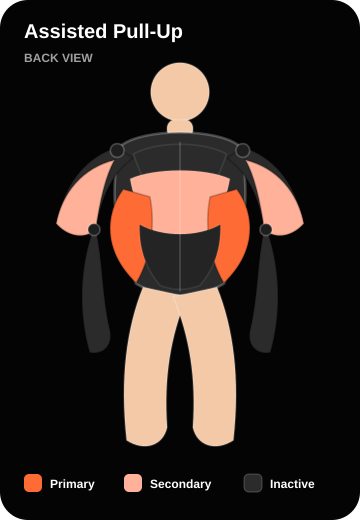
workouts/exercises/v1/assisted_pull_up/demo.lottie.jsonSeated Cable Row
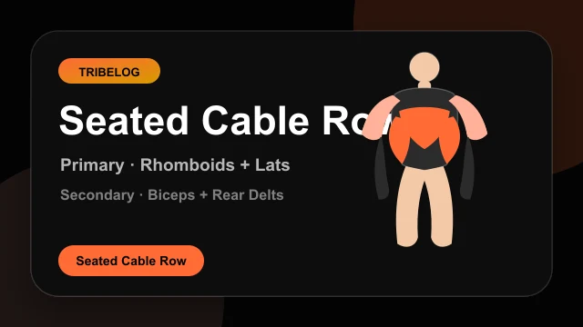
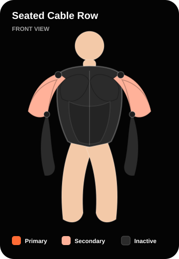
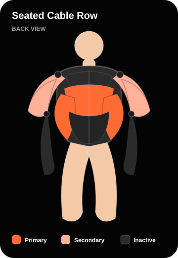
workouts/exercises/v1/seated_cable_row/demo.lottie.jsonOne-Arm Dumbbell Row
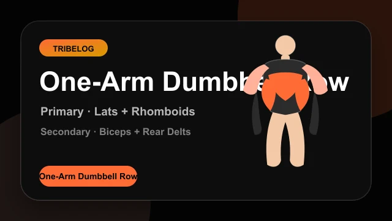
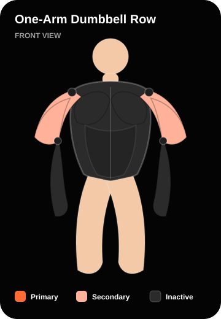
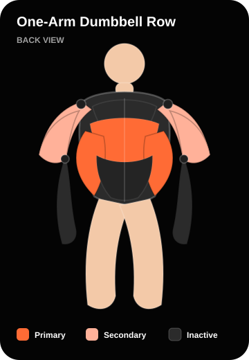
workouts/exercises/v1/one_arm_dumbbell_row/demo.lottie.jsonBarbell Bent-Over Row
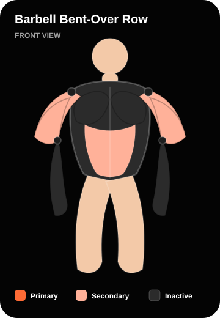
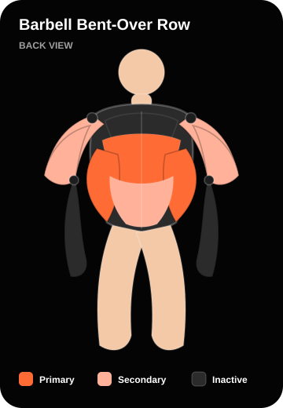
workouts/exercises/v1/barbell_bent_over_row/demo.lottie.jsonFace Pull
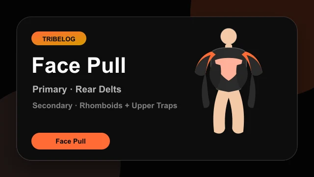
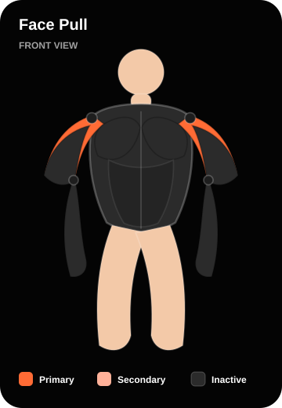
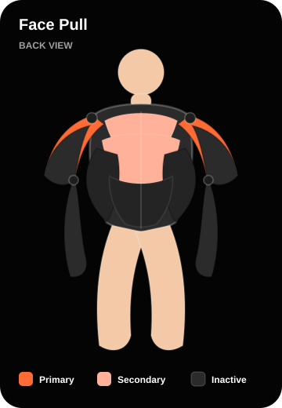
workouts/exercises/v1/face_pull/demo.lottie.jsonRear Delt Fly
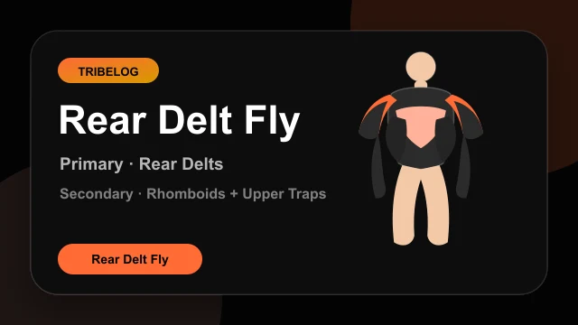
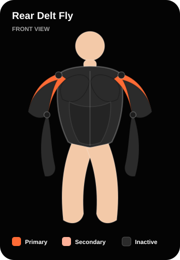
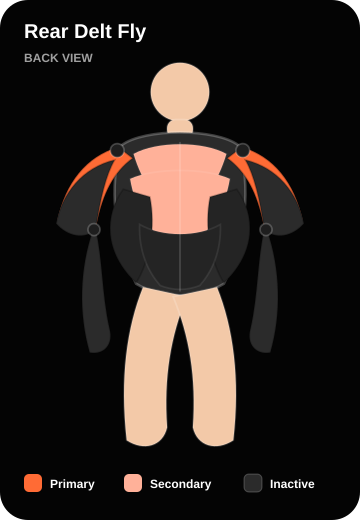
workouts/exercises/v1/rear_delt_fly/demo.lottie.jsonDumbbell Biceps Curl
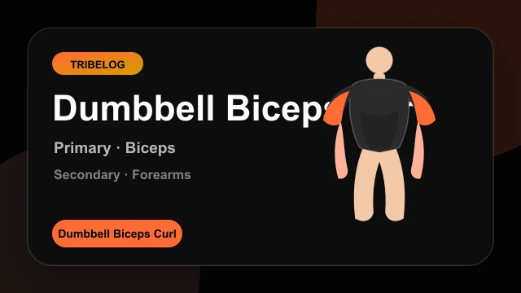
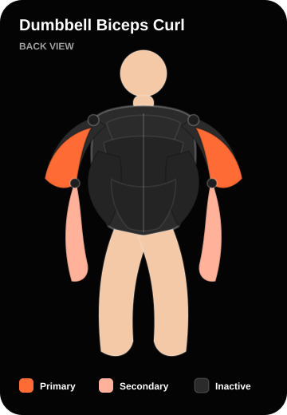
workouts/exercises/v1/dumbbell_biceps_curl/demo.lottie.jsonHammer Curl
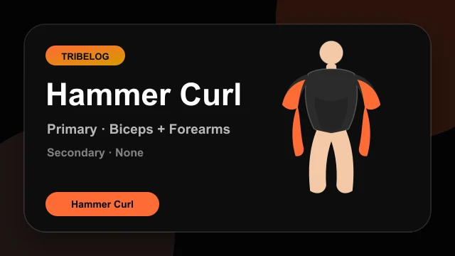
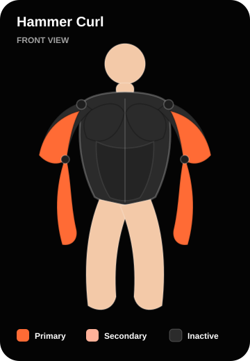
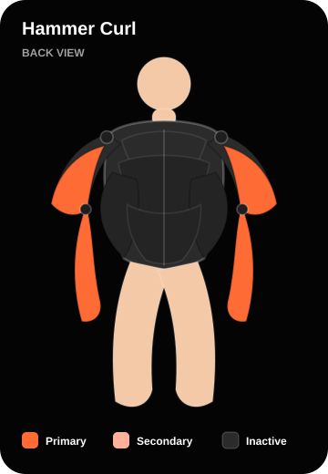
workouts/exercises/v1/hammer_curl/demo.lottie.json